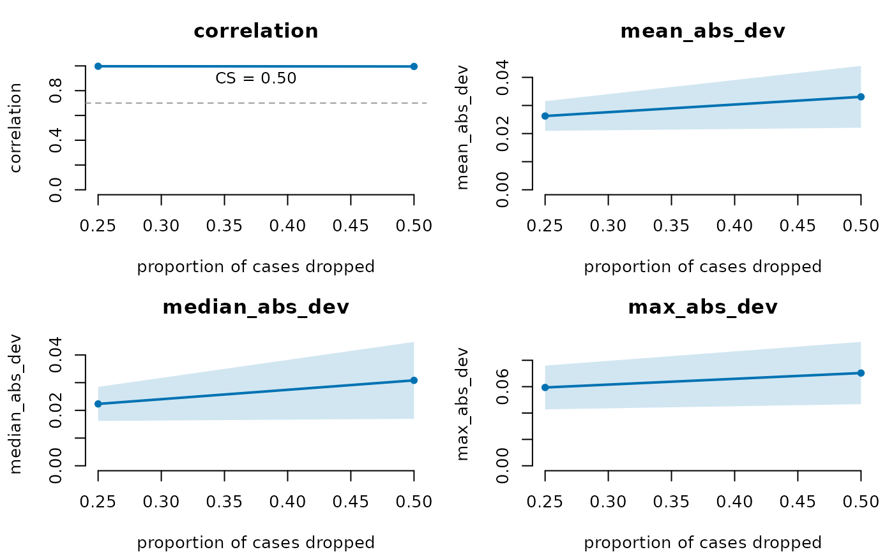

Edge-weight stability coefficient (case-dropping subset bootstrap)
Source:R/reliability.R
net_casedrop_reliability.RdThe edge-vector complement to net_stability(). For each drop proportion the
network is re-estimated on random case-dropped subsets and the subset
edge-weight vector is compared with the full-sample one. The edge-weight
CS-coefficient follows the rule of bootnet::corStability() (Epskamp,
Borsboom & Fried 2018): a subset is stable when its edge-vector correlation
is strictly greater than threshold, and the CS-coefficient is the largest
drop proportion at which the share of stable subsets is strictly greater
than certainty (0 when no proportion qualifies).
Usage
net_casedrop_reliability(
data,
method = "glasso",
drop_prop = seq(0.1, 0.9, by = 0.1),
iter = 100L,
threshold = 0.7,
certainty = 0.95,
cor_method = c("pearson", "spearman", "kendall"),
labels = NULL,
estimator_args = list(),
...
)
# S3 method for class 'psychnet_casedrop'
print(x, ...)
# S3 method for class 'psychnet_casedrop'
plot(x, ...)Arguments
- data
Data frame or matrix (rows = observations), resampled exactly as given (see
net_boot()), or apsychnet_group(case-dropped per level).- method
Estimator (see
psychnet()). Default"glasso".- drop_prop
Proportions of cases to drop. Default
seq(0.1, 0.9, 0.1).- iter
Subsets per proportion. Default 100.
- threshold
Correlation a subset must exceed (strictly) to count as stable. A single number in (0, 1). Default 0.7.
- certainty
Share of stable subsets that must be exceeded (strictly). A single number in (0, 1). Default 0.95.
- cor_method
Correlation method for the edge-vector comparison:
"pearson"(default, as in bootnet),"spearman", or"kendall".- labels
Optional node labels.
- estimator_args
Named list of estimator arguments.
cor_method,iter,thresholdanddrop_propare arguments of this diagnostic (the edge comparison), so an estimator's owncor_methodorthresholdmust go here, e.g.estimator_args = list(cor_method = "spearman"); values in...with those names never reach the estimator.- ...
Passed to the estimator by
net_casedrop_reliability(); ignored by the methods.- x
A
psychnet_casedropobject.
Value
A tidy data.frame (class psychnet_casedrop), one row per metric
per drop proportion, with columns metric, drop_prop (nominal),
actual_drop (the proportion actually dropped after rounding to whole
cases), mean, sd and n_valid (subsets in which the metric was
defined; mean/sd are NA when too few were). The edge-weight
CS-coefficient is stored with it and shown when the result is printed.
Undefined correlations raise a psychnet_undefined_statistic warning; a
constant full-sample edge vector (e.g. an empty network) raises a
psychnet_constant_centrality warning (its CS-coefficient is 0).
A failed subset fit raises a psychnet_resample_failed warning carrying
the first error; a failed full-sample fit raises a
psychnet_estimation_failed error with the estimator's message. plot()
draws the four similarity metrics (correlation, mean/median/max absolute
deviation) against the proportion dropped, each with a +/- 1 SD band, the
correlation panel carrying the threshold and the CS-coefficient. print()
and plot() return x invisibly.
Details
The correlation follows bootnet's cor0(): 0 when either edge vector is
constant (for example an empty subset network), undefined when fewer than
two edges are available. Unlike bootnet, which drops undefined correlations
from the share (na.rm = TRUE), psychnets counts an undefined correlation
(and a failed subset fit) as failing, so the CS-coefficient is never raised
by subsets that could not be compared.
Functions
print(psychnet_casedrop): The metric table and the edge-weight CS-coefficient.plot(psychnet_casedrop): Similarity metrics by drop proportion.
References
Epskamp, S., Borsboom, D., & Fried, E. I. (2018). Estimating psychological networks and their accuracy. Behavior Research Methods, 50(1), 195-212.
Examples
# `method`, `iter`, and `drop_prop` are chosen so the example runs quickly;
# the defaults (method = "glasso", iter = 100, drop_prop = seq(0.1, 0.9,
# 0.1)) are what a real reliability assessment should use.
rel <- net_casedrop_reliability(SRL_Claude, method = "pcor", iter = 5,
drop_prop = c(0.25, 0.5))
rel
#> # edge-weight stability: pcor | CS = 0.50 (pearson cor > 0.70 in > 95% of subsets)
#> metric drop_prop actual_drop mean sd n_valid
#> 1 mean_abs_dev 0.25 0.25 0.02624533 0.005282477 5
#> 2 mean_abs_dev 0.50 0.50 0.03307525 0.011005165 5
#> 3 median_abs_dev 0.25 0.25 0.02232825 0.006143106 5
#> 4 median_abs_dev 0.50 0.50 0.03082581 0.013881714 5
#> 5 correlation 0.25 0.25 0.99715845 0.001261050 5
#> 6 correlation 0.50 0.50 0.99546966 0.002588013 5
#> 7 max_abs_dev 0.25 0.25 0.05938727 0.016592220 5
#> 8 max_abs_dev 0.50 0.50 0.07034004 0.023615060 5
plot(rel)
